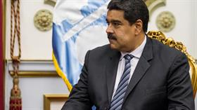

Se confirmó la suspensión de Venezuela del Mercosur
Es por no cumplir con las normas del bloque; hoy se formalizaría la medida

El gobierno de Venezuela que lidera Nicolás Maduro quedó anoche suspendido del Mercosur ya que no aprobó las 112 resoluciones y casi 300 parámetros que son requeridos para integrar el bloque regional.
Tanto las cancillerías de Brasil como las de la Argentina y Paraguay confirmaron la suspensión de Venezuela del Mercosur. Así, Caracas ya no tendrá voz ni voto en el bloque regional.
La presidencia colegiada del Mercosur hizo lugar al ultimátum que se le había dado a Maduro para ajustarse a la normativa del bloque para evitar su suspensión desde el 1° de diciembre. Existe ahora la posibilidad de que el Mercosur le otorgue una nueva prórroga a Caracas para amoldar sus leyes a la normativa del Mercosur con el fin de no expulsar definitivamente a Venezuela del bloque.
Ayer, Venezuela activó un mecanismo del Mercosur para resolución de controversias, debido a las "agresiones internas" contra scaracas, según adelantó la ministra de Relaciones Exteriores, Delcy Rodríguez. La canciller venezolana , difundió en su cuenta de Twitter una comunicación enviada a sus pares de los países socios en la que formaliza la utilización del mecanismo de solución de controversias.
El presidente de Venezuela, Nicolás Maduro
El presidente de Venezuela, Nicolás Maduro. Foto: Archivo
"Venezuela activa el mecanismo Mercosur para resolución de controversias por las agresiones y hostigamiento contra su presidencia en el organismo", dijo Rodríguez al criticar la posición de Argentina, Brasil Uruguay y Paraguay, que pidideron que Venezuela sea suspendida por no haber asimilado las normas internas del bloque. En una carta dirigida a sus pares, Rodríguez señaló que la controversia incluye el desconocimiento "exprofeso por parte de sus respectivos gobiernos de la presidencia pro témpore de Venezuela del Mercosur, que corresponde plenamente, sin que hubiese elementos legales y jurídicos que imposibilitaran tal función".
A su vez, el presidente Maduro había realizado el lunes pasado un duro cuestionamiento a sus socios del Mercosur que impulsaron la suspensión de Caracas. Durante su programa de radio La hora de la salsa, Maduro advirtió que nadie podrá sacar a Venezuela del Mercosur. "Si nos sacan por la puerta, volvemos por la ventana", expresó el presidente venezolano.
Es probable que hoy se formalice oficialmente la suspensión de Venezuela del Mercosur. En adelante, la Argentina asumirá el próximo 14 de diciembre la presidencia pro témpore del Mercosur que está en manos de un sistema colegiado formado por los presidentes de Paraguay, Uruguay, la Argentina y Brasil, ya que en julio pasado Venezuela quiso hacerse en forma unilateral con la presidencia del bloque y fue duramente rechazada. Ahora el presidente Mauricio Macri asumirá la presidencia pro témpore del bloque para restablecer el orden y tendrá la compleja situación de Venezuela como miembro suspendido.